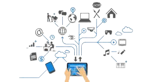

O que é revolução tecnológica e impactos nas empresas e no mundo
Saiba como a revolução tecnológica influencia as estratégias das marcas, quais os benefícios e como se preparar para as mudanças constantes do mercado.

Com foco nas tecnologias relacionadas à comunicação e à informação, a revolução tecnológica surgiu com o desenvolvimento de novas ideias no campo industrial e seguiu com transformações históricas, como a internet, até chegar ao cenário atual.
Hoje, o mercado vive mudanças constantes e cada vez mais rápidas com tecnologias que alteram o modo de consumo, a forma de se comunicar com o público e de conduzir as operações da empresa.
Com isso, inovações tendem a surgir para acompanhar essas mudanças. As marcas devem se atentar a elas para manter a vantagem competitiva, encontrar novas oportunidades de negócio e identificar pontos de melhoria para o negócio.